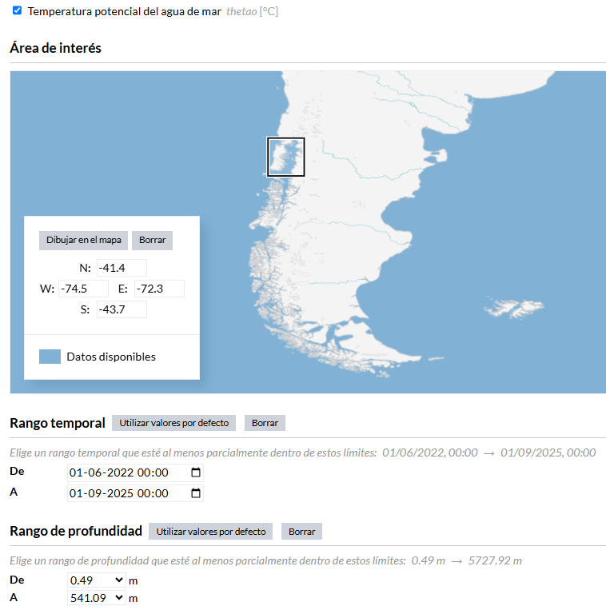
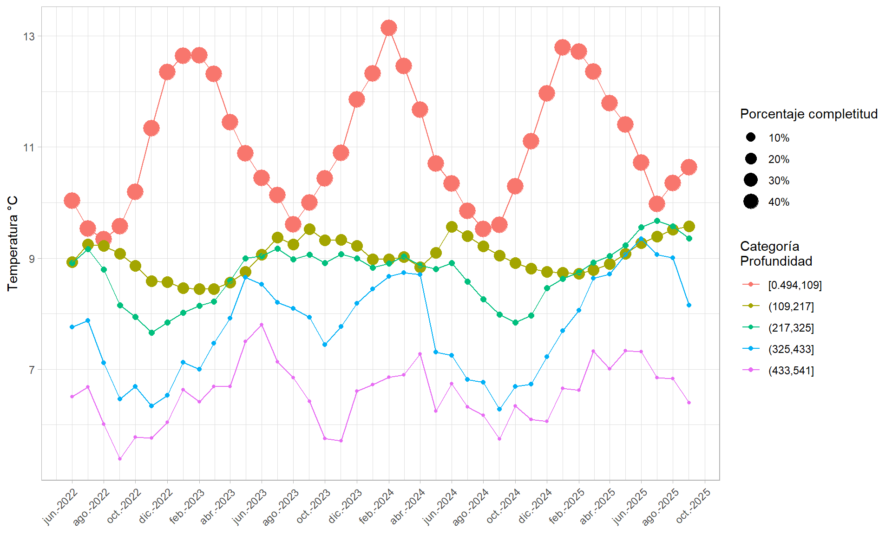
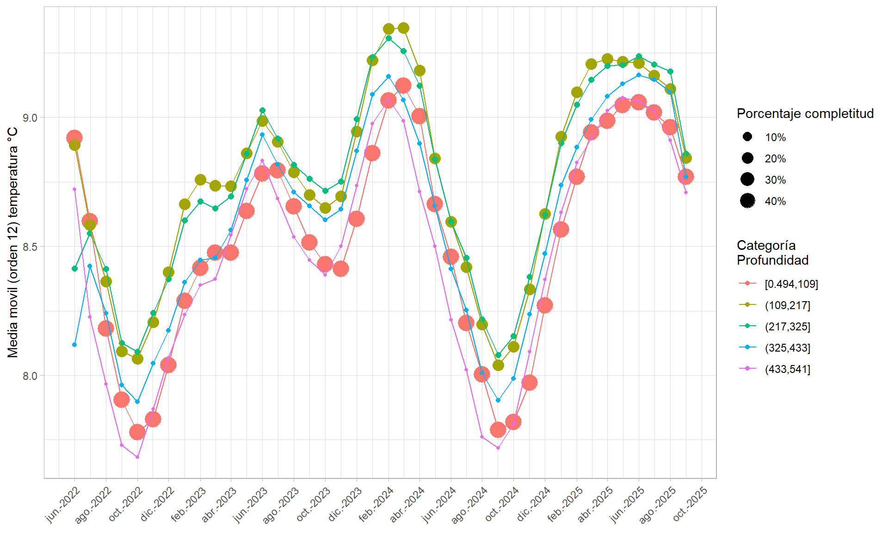
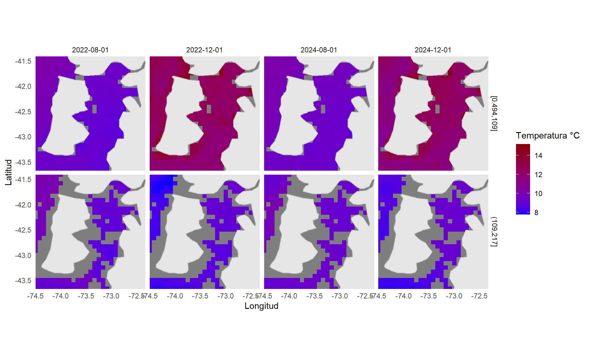

dat_temp1 <- nc_open("./Datos/cmems_mod_glo_phy-thetao_anfc_0.083deg_P1M-m_1760545237347.nc")
dat_temp2 <- read.cmems("./Datos/cmems_mod_glo_phy-thetao_anfc_0.083deg_P1M-m_1760545237347.nc")Evaluación Taller Intermedio OHWe 2025
Fuente de datos
Para ilustrar la manipulación de datos temporales y espaciales se utilizará la información proveniente del producto Global Ocean Physics Analysis and Forecast.
https://data.marine.copernicus.eu/es/product/GLOBAL_ANALYSISFORECAST_PHY_001_024/
De Copernicus (https://marine.copernicus.eu/).

El archivo netCDF contiene datos mensuales de la temperatura potencial del mar para la zona de la Isla Grande de Chiloe, Chile (Figura 1). El periodo abarca desde junio del 2022 a septiembre de 2025, en profundidades entre los 500 metros y la superficie del mar (a medio metro).
Importación a RStudio
Importacion con las librerias ncdf4 y satin
La importación de datos puede ser realizada con la función nc_open() el paquete ncdf4 o con la función read.cmems() del paquete satin disponible en la cuenta de GitHub hvillalo.
La información global del archivo netCDF, importado con la función read.cmems(), se presenta a continuación:
print.satin_mod(dat_temp2)Object of class satin
Title: thetao
Long name: Temperature
Name: thetao
Units: degrees_C
Temporal range: monthly
Spatial resolution: 9.3 km
Data dimensions:
Lat Lon Time Depth
28 27 40 32
Data ranges:
lon lat thetao period depth
min -74.49999 -43.66667 4.97568 2022-06-01 0.494025
max -72.33333 -41.41667 18.11768 2025-09-01 541.088928Podemos ver que tenemos datos mensuales de temperatura en °C, con una resolución espacial de 9.3 km. En total son 40 meses (jun-2022 a sep-2025) y 32 niveles de profundidad diferentes (entre 0.5 y 541 metros).
Para generar una tabla con los datos de posición, temporales y de profundidad utilizamos el objeto dat.temp2 clase satin mediante la función formatXTP modificada para obtener todas las capas temporales y de profundidad.
sst_stn <- extractPts(X = dat_temp2, points = expand.grid(x=dat_temp2@lon, y=dat_temp2@lat))
dt_stn <- formatXTP(sst_stn)La vista de los 10 primeros registros de datos importados se presenta en la siguiente tabla.
| Time | Depth | tp | id | x | y | d | lon | lat | sst |
|---|---|---|---|---|---|---|---|---|---|
| 2022-06-01 | 0.494025 | p1 | 1 | -74.49999 | -43.66667 | 0 | -74.49999 | -43.66667 | 9.890773 |
| 2022-06-01 | 0.494025 | p1 | 2 | -74.41666 | -43.66667 | 0 | -74.41666 | -43.66667 | 9.932520 |
| 2022-06-01 | 0.494025 | p1 | 3 | -74.33333 | -43.66667 | 0 | -74.33333 | -43.66667 | 9.984539 |
| 2022-06-01 | 0.494025 | p1 | 4 | -74.24999 | -43.66667 | 0 | -74.24999 | -43.66667 | 9.969974 |
| 2022-06-01 | 0.494025 | p1 | 5 | -74.16666 | -43.66667 | 0 | -74.16666 | -43.66667 | 9.904797 |
| 2022-06-01 | 0.494025 | p1 | 6 | -74.08333 | -43.66667 | 0 | -74.08333 | -43.66667 | 9.823667 |
El resumen del total de capas y posiciones se presenta en la siguiente tabla.
| Time_n | Depth_n | x_n | y_n | min | max | mean | median | q25 | q75 | sd | riq |
|---|---|---|---|---|---|---|---|---|---|---|---|
| 40 | 32 | 27 | 28 | 4.97568 | 18.11768 | 10.87753 | 10.43774 | 9.569804 | 11.8639 | 1.709499 | 2.294091 |
Importación con la librería raster
Otra formato de importación es utilizar la función brick() de la librería raster, que importa los archivos netCDF en formato rasterbrick. El inconveniente es que si aparte del tiempo existe otra dimensión (profundidad), solo es posible importar un nivel de esa capa.
Para solucionar esto, se generó la función brick_mod que permite:
- Importar todas todas las capas temporales para una capa particular de profundidad con los argumentos,
dt.time = TRUE, dt.depth = FALSE, level = 1,levelindica el número de la capa asociada a la profundidad.- Para este caso se genera una lista con los objetos “
brick.tmp” y “dt.tmp”, el primer objeto contiene el RasterBrick para la capa de profundidad elegida (por defecto la primera) y el segundo es una tabla con los datos temporales, la capa de profundidad elegida, las posiciones y la variable de interés.
- Para este caso se genera una lista con los objetos “
- Importar todas todas las capas de profundidad para una capa particular temporal con los argumentos,
dt.time = FALSE, dt.depth = TRUE, level = 1,levelindica el número de la capa asociada a la temporalidad.- Para este caso se genera una lista con los objetos “
brick.dpht” y “dt.dpht”, el primer objeto contiene el RasterBrick para cada capa de temporalidad elegida (por defecto la primera) y el segundo es una tabla con los datos de profundidad, la capa temporal elegida, las posiciones y la variable de interés.
- Para este caso se genera una lista con los objetos “
- Importar todas todas las capas temporales y de profundidad con los argumentos,
dt.time = TRUE, dt.depth = TRUE, el argumentolevelno es utilizado.- Para este caso se genera una lista con los objetos “
brick.tmp” y “dt.td”, el primer objeto contiene los RasterBrick para cada capa de profundidad y el segundo es una tabla con los datos temporales, la profundidad, las posiciones y la variable de interés.
- Para este caso se genera una lista con los objetos “
path_sst <- "./Datos/cmems_mod_glo_phy-thetao_anfc_0.083deg_P1M-m_1760545237347.nc"
sst_tmp <- brick_mod(path_sst, dt.time = TRUE, dt.depth = FALSE, level = 3)
sst_dph <- brick_mod(path_sst, dt.time = FALSE, dt.depth = TRUE, level = 4)
sst_tmdp <- brick_mod(path_sst, dt.time = TRUE, dt.depth = TRUE)Los objetos generados en la importación de sst_tmdp son el objeto brick.tmp que contiene los atributos de la clase RasterBrick y dt.td con la tabla de datos temporales, espaciales (lat, lon y depth) y la variable de interés.
names(sst_tmdp)[1] "brick.tmp" "dt.td" Para este caso se tienen tantos objetos RasterBrick como profundidades se tengan:
round(as.numeric(names(sst_tmdp$brick.tmp)),1) [1] 0.5 1.5 2.6 3.8 5.1 6.4 7.9 9.6 11.4 13.5 15.8 18.5
[13] 21.6 25.2 29.4 34.4 40.3 47.4 55.8 65.8 77.9 92.3 109.7 130.7
[25] 155.9 186.1 222.5 266.0 318.1 380.2 453.9 541.1Por ultimo la resolución espacial de los datos importados con la función brick_mod() es 9.3 km y el resumen del total de capas y posiciones se presenta en la siguiente tabla.
| Time_n | Depth_n | x_n | y_n | min | max | mean | median | q25 | q75 | sd | riq |
|---|---|---|---|---|---|---|---|---|---|---|---|
| 40 | 32 | 27 | 28 | 4.97568 | 18.11768 | 10.87753 | 10.43774 | 9.569804 | 11.8639 | 1.709499 | 2.294091 |
Gráfica temporal datos importados desde la librería raster
Construcción de tabla de datos considerando intervalos de profundidad de aproximadamente 100 metros.
tbl_catp <- sst_tmdp$dt.td %>%
mutate(Cat_Depth = cut_interval(Depth, 5)) %>%
group_by(Time, Cat_Depth) %>%
reframe(
n = n(),
n_miss = sum(is.na(sst)),
p_complete = 1-(n_miss/n),
sst=mean(sst, na.rm = TRUE)) %>%
mutate(sst_mm = c(cma(sst, order = 12)$fitted))La vista de los 10 primeros registros de la tabla agrupada por Time y Cat_Depth se presenta en la siguiente tabla.
| Time | Cat_Depth | n | n_miss | p_complete | sst | sst_mm |
|---|---|---|---|---|---|---|
| 2022-06-01 | [0.494,109] | 16632 | 8371 | 0.4966931 | 10.034313 | 8.919657 |
| 2022-06-01 | (109,217] | 3024 | 2431 | 0.1960979 | 8.927974 | 8.892426 |
| 2022-06-01 | (217,325] | 2268 | 2211 | 0.0251323 | 8.916652 | 8.413693 |
| 2022-06-01 | (325,433] | 756 | 747 | 0.0119048 | 7.760554 | 8.118268 |
| 2022-06-01 | (433,541] | 1512 | 1501 | 0.0072751 | 6.508286 | 8.721688 |
| 2022-07-01 | [0.494,109] | 16632 | 8371 | 0.4966931 | 9.532677 | 8.596782 |
La Figura 2 presenta la variación promedio de la temperatura mensual entre junio de 2022 y septiembre de 2025, considerando intervalos de profundidad de aproximadamente 100 metros. Se observa un patrón térmico consistente con la estratificación vertical típica de ambientes marinos, donde la temperatura disminuye progresivamente con la profundidad. Las variaciones temporales sugieren fluctuaciones estacionales y posibles eventos de mezcla o intrusiones de masas de agua más frías en determinados periodos.

En la Figura 3 se muestran los promedios móviles centrados de orden 12 aplicados a la serie de temperatura mensual entre junio de 2022 y septiembre de 2025, desagregados por intervalos de profundidad de aproximadamente 100 metros. El suavizado permite identificar tendencias de largo plazo en la dinámica térmica, evidenciando posibles ciclos interanuales y la persistencia de gradientes térmicos verticales en el período analizado.

Gráfica espacial datos importados desde la librería raster
La Figura 4 compara la temperatura en los meses de agosto y diciembre de los años 2022 y 2024 para dos categorías de profundidad. Los resultados revelan diferencias térmicas estacionales marcadas, con temperaturas superficiales más elevadas en diciembre, asociadas al mayor calentamiento estival, y valores menores en agosto, correspondientes al invierno austral. Asimismo, se aprecia una atenuación de las variaciones térmicas con la profundidad, reflejando una mayor estabilidad de las masas de agua profundas.
